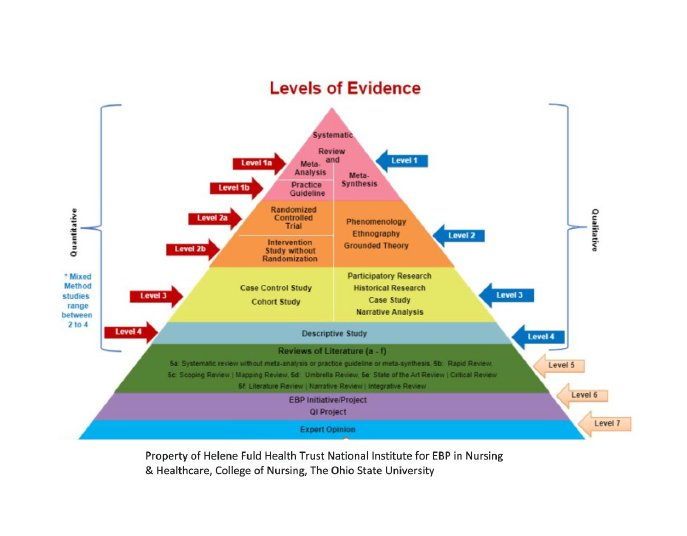

Helene Fuld Health Trust National Institute for EBP in Nursing & Healthcare, College of Nursing, The Ohio State University. Levels of evidence framework used for classification of all included studies in this systematic review.
| Study | Level 1a — Systematic Review & Meta-Analysis | Level 1b — Practice Guideline | Level 2a — Randomized Controlled Trial | Level 2b — Intervention w/o Randomization | Level 5 — Review of Literature |
|---|---|---|---|---|---|
|
Level 1a — Systematic Review & Meta-Analysis
2 studies
|
|||||
Caldonazo et al., 2024 Systematic review & meta-analysis — TSV vs. no TSV (4 RCTs, n=3,820) |
✓ | — | — | — | — |
Rogers et al., 2024 Cochrane systematic review — Interventions to prevent SSI in cardiac surgery (118 RCTs, n=51,854) |
✓ | — | — | — | — |
|
Level 1b — Practice Guideline
3 studies
|
|||||
Bouza et al., 2021 Consensus guidelines — Prevention, diagnosis & management of post-surgical mediastinitis (SEICAV/SECTCV/CIBERES) |
— | ✓ | — | — | — |
Grant et al., 2024 ERAS Cardiac / ERAS International / STS Joint Consensus — Perioperative care in cardiac surgery |
— | ✓ | — | — | — |
Lazar et al., 2016 Expert consensus review — Prevention & management of sternal wound infections (STS) |
— | ✓ | — | — | — |
|
Level 2a — Randomized Controlled Trial
5 studies
|
|||||
Caimmi et al., 2017 RCT — Posthorax vest vs. no vest, high-risk patients (n=310) |
— | — | ✓ | — | — |
Gorlitzer et al., 2010 RCT — Posthorax vest vs. elastic bandage (n=1,560) |
— | — | ✓ | — | — |
Gorlitzer et al., 2013 RCT multicentre — Posthorax vest vs. no vest (n=2,539) |
— | — | ✓ | — | — |
Naismith & Street, 2005 RCT pilot — Cardibra vs. regular bra, female patients (n=20) |
— | — | ✓ | — | — |
Tewarie et al., 2012 RCT — Stern-E-Fix corset vs. elastic bandage (n=750) |
— | — | ✓ | — | — |
|
Level 2b — Intervention Study without Randomization
2 studies
|
|||||
Celik et al., 2011 RCT + retrospective component — Thorax vest vs. no vest in COPD patients (n=221) |
— | — | — | ✓ | — |
Selten et al., 2021 Retrospective controlled study — Stern-E-Fix vs. elastic bandage, female patients (n=145) |
— | — | — | ✓ | — |
|
Level 5 — Review of Literature
4 studies
|
|||||
Brocki et al., 2010 Literature review with graded recommendations — Mechanical stress factors & sternal precautions post-sternotomy |
— | — | — | — | ✓ |
El-Ansary et al., 2019 Perspective paper — Evidence-based activity & less restrictive sternal precautions post-sternotomy |
— | — | — | — | ✓ |
Tsang et al., 2016 Best evidence review — External support devices & sternal wound complications (6 RCTs, n=5,826) |
— | — | — | — | ✓ |
Vitomskyi, 2022 Narrative review — Critique of limitations in physical therapy post-sternotomy |
— | — | — | — | ✓ |
Studies are classified according to the Helene Fuld Health Trust National Institute for EBP in Nursing & Healthcare Levels of Evidence framework (The Ohio State University College of Nursing). Classification reflects study design only and does not account for internal validity or risk of bias. Several included studies carry identified methodological limitations that affect the interpretive weight of their findings independent of their design-based level: Hjorth (2014) — company sponsored; El-Ansary (2008, 2015) — chronic instability population; Katijjahbe (2018) — no sternal binders used in intervention arm. These concerns are addressed in detail in the Comprehensive Outcome Table and forthcoming Evidence Tables.